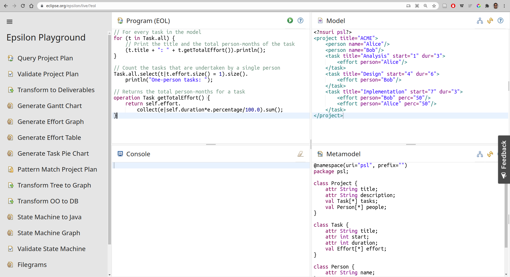
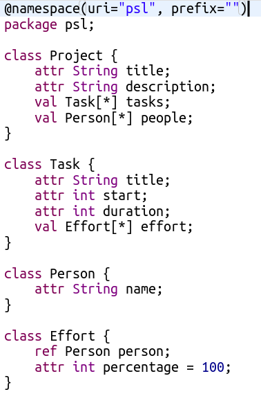
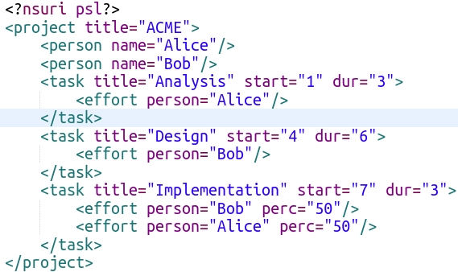
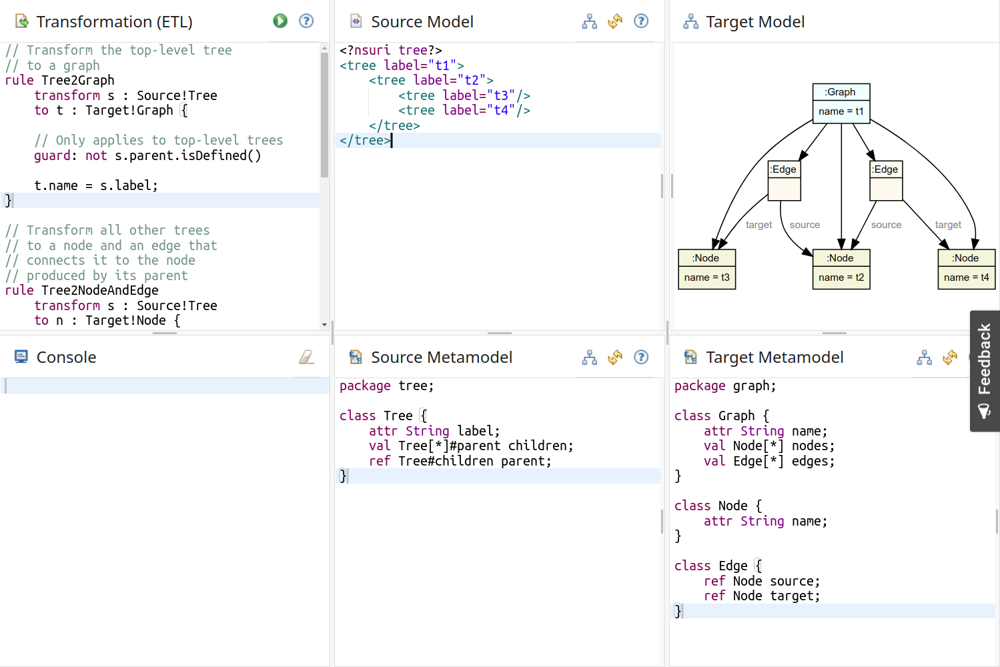
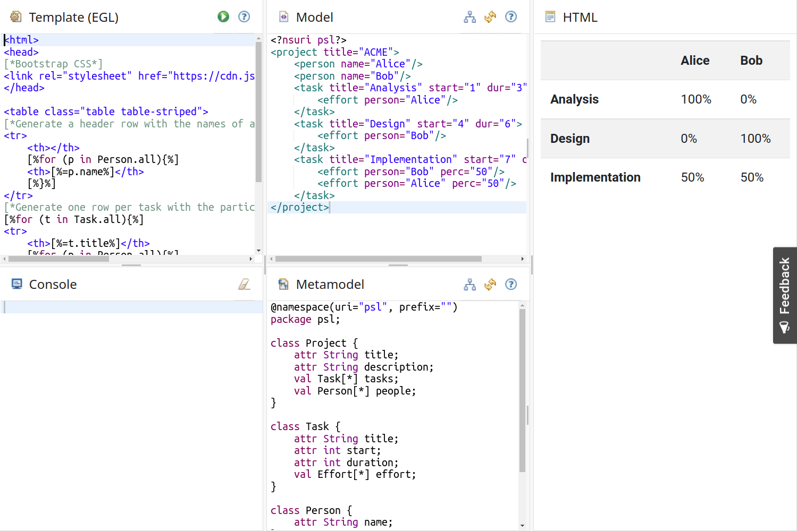
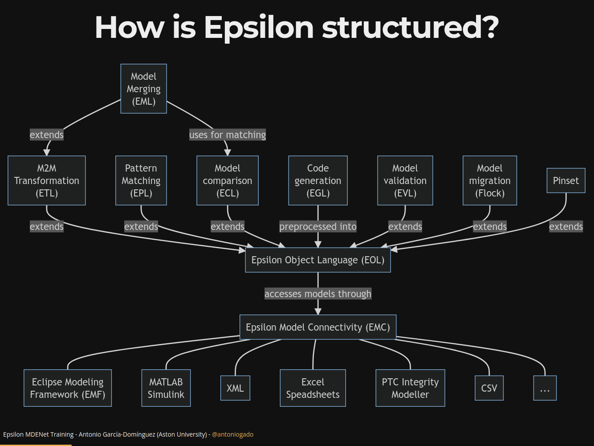
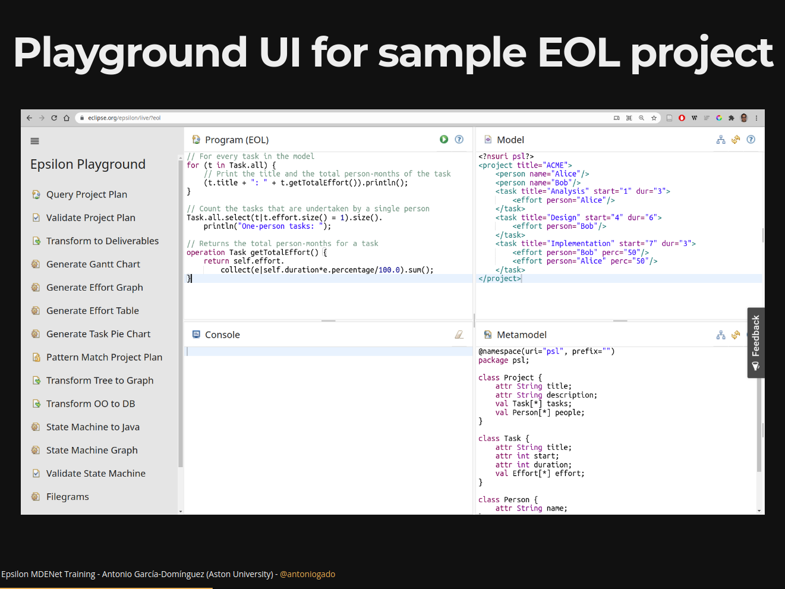
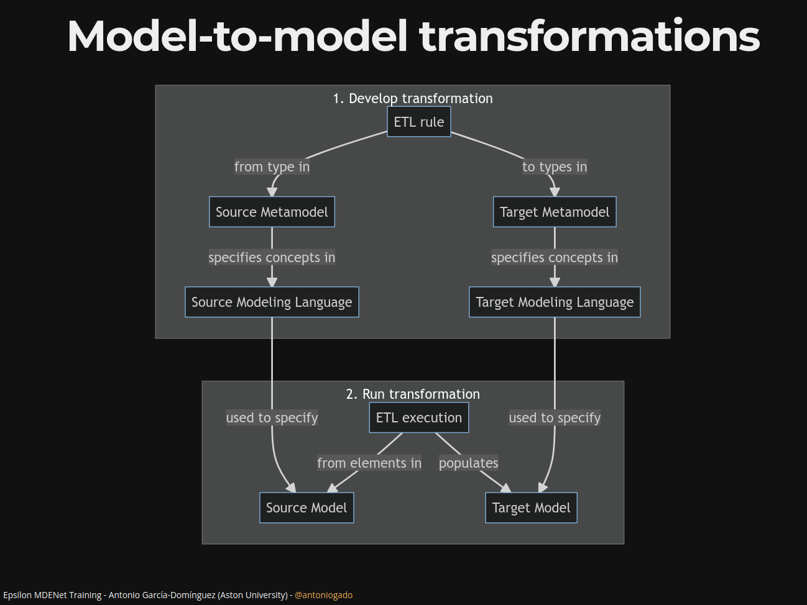
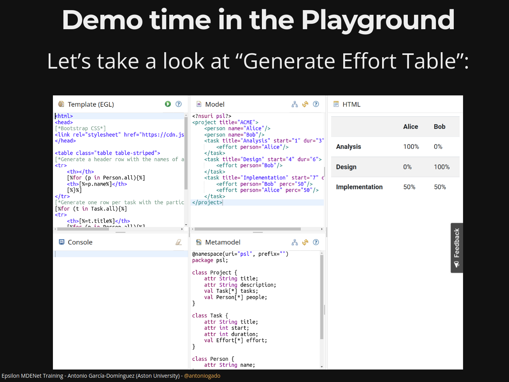

Antonio Garcia-Dominguez
October 26, 2021
This JOT blog post talks about what MDE is not, too!
.ecore or .xsd file)


Replace the “Program” with this, and click on :
Type.all = collection of all Type instances
All collections support a number of operations: first returns the first element
println() is one operation supported by any value: you can also provide a string as a prefix (e.g. "title: ")
A “foreach” loop in EOL is done as follows:
Change the code to print the title of all tasks
if inside the for loop (as in C / JavaScript)collection.select(e | condition)select, replacing many loops:
Let’s refactor the idea of “large task” to a context operation: place it at the end of “Program”.
Now you can do t.isLarge(3) if t is a Task
It’s useful to create a library of operations for your DSML, which you can reuse from any Epsilon script by using the import statement.
EOL is often used for small imperative in-place model transformations
For instance, if we want to add a new person:
Try adding a “Testing” task taking 4 days before your for loop: it should appear in the output

Source!Tree: Tree type in source metamodelTarget!Graph: Graph type in target metamodelGraphs (one per Tree)Graph from the root TreeGraph to the label of the Tree?Nodes from Trees which have a parentname of the Node to the label of the TreeTree2Node to add the new Node to the nodes of the Graph:
Target!Graphnodesadd() the NodeNode to all its children: this requires knowing the Nodes that were produced from the child Treest.equivalent() operation for this: called on a Tree t, it will return the first element produced from itTry extending the Tree2Node rule to do this.
We haven’t touched on quite a few things:
@primary / @lazy / @greedy::= operatorLet’s take a look at “Generate Effort Table”:

   
Antonio Garcia-Dominguez
a.garcia-dominguez AT aston.ac.uk